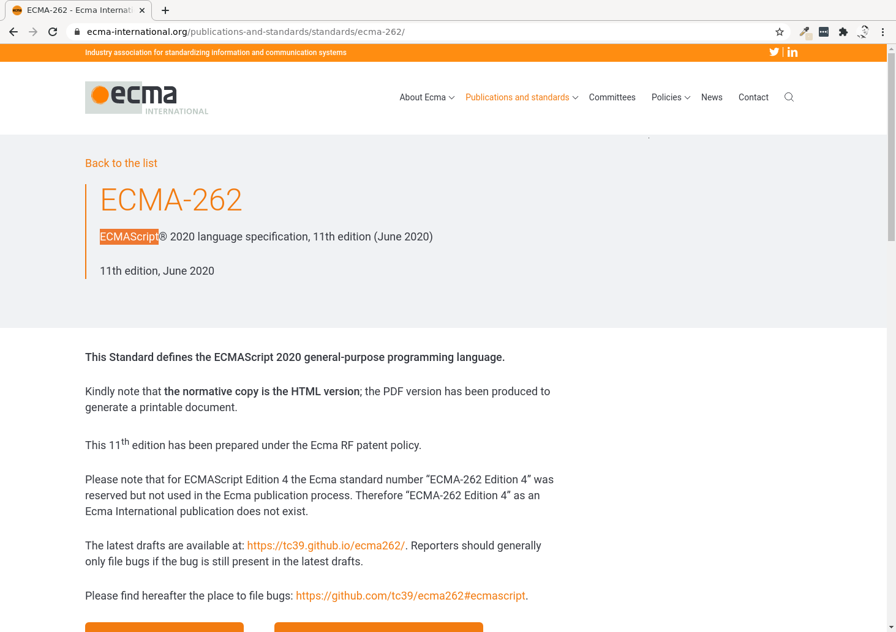
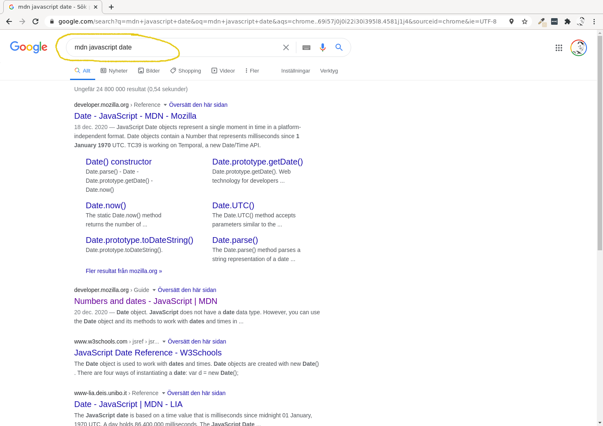
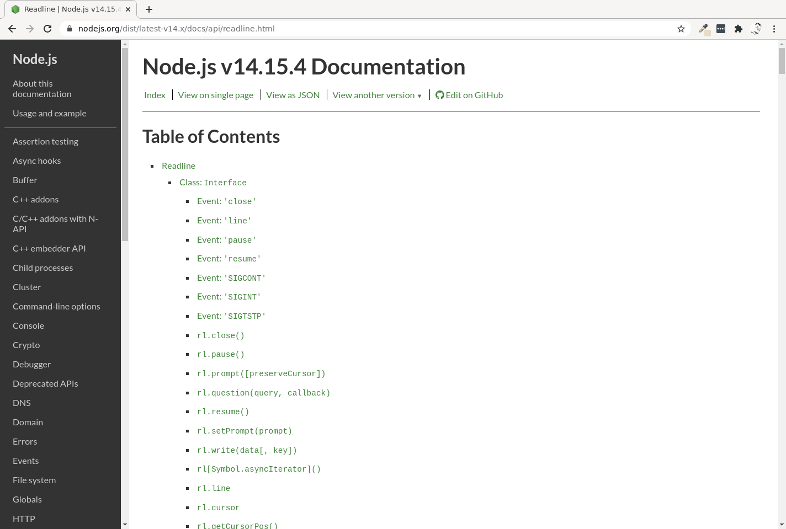
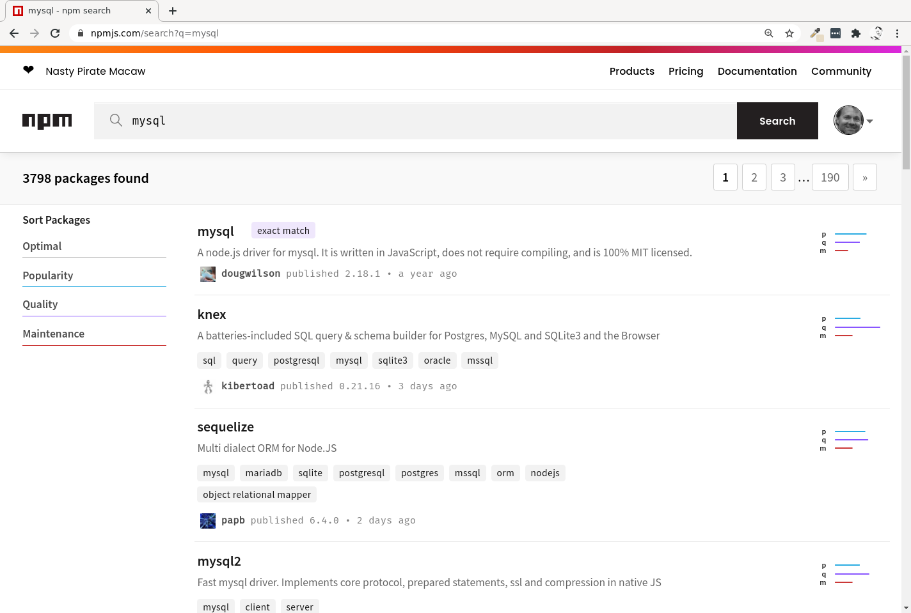

<!doctype html>
<html class="theme-5">
<meta charset="utf-8" />
<link href="../html-slideshow.bundle.min.css" rel="stylesheet" />
<link href="../style.css" rel="stylesheet" />
<script src="https://dbwebb.se/cdn/js/html-slideshow_v1.1.0.bundle.min.js"></script>

<title>Kursen databas</title>

<script data-role="slide" type="text/html" data-markdown class="titlepage center">
# JavaScript and Node.js
## Get going with JavaScript on the server
### Mikael Roos
</script>


<script data-role="slide" data-markdown type="text/html">
# Agenda

* JavaScript
* Node.js
* Asynchronous programmingmodel
* callback, promise, async/await

</script>


<script data-role="slide" data-markdown type="text/html" class="center">
# ECMAScript standard
<figure>
    
    <figcaption>The website www.ecma-international.org for standardisation of JavaScript.</figcaption>
</figure>
</script>


<script data-role="slide" data-markdown type="text/html">
# JavaScript

* 1995, Netscape, Brendan Eich, 10 days
* To "make the web browser more dynamic"
* ECMAScript standard
* ES5, ES5.1,
* ECMAScript 2015 (6th edition) (ES6)
* ECMAScript 2020 (11th edition) (ES11)

</script>


<script data-role="slide" data-markdown type="text/html">
# JavaScript docs

* Reference manual on MDN
    * "mdn javascript date"

</script>


<script data-role="slide" data-markdown type="text/html" class="center">
# JavaScript docs
<figure>
    
    <figcaption>How to find documentation on JavaScript through MDN.</figcaption>
</figure>
</script>


<script data-role="slide" data-markdown type="text/html">
# JavaScript features

> "Prototype-based, multi-paradigm dynamic scripting language."

* Runs in browser
* Event driven
* HTML API
* Functional programming model
* Class based programming model (ES6)

</script>


<script data-role="slide" data-markdown type="text/html">
# JavaScript bad reputation

* Bad language or bad programmers?
* Prototype based, not class based
* Error handling
* Limited standard library
* Each browser has its own JS engine, compatibility

</script>


<script data-role="slide" data-markdown type="text/html">
# JavaScript high level

* JavaScript is weak typed, dynamic
* Typed JavaScript = TypeScript
    * Transpiles down to JavaScript
* TypeScript tries solving some "flaws" to make it easier

<p class="footnote">Read more on TypeScript https://www.typescriptlang.org/.</p>

</script>


<script data-role="slide" data-markdown type="text/html">
# Node.js

* Ryan Dahl, 2009, JavaScript on the server
* Opensource, cross platform
* JS existed on the server, but not so popular
* "Same" language on both client and server
* OpenJS Foundation, manages the software

</script>


<script data-role="slide" data-markdown type="text/html">
# Node.js compare JS

* Combine
    * Google V8 js engine
    * Event loop (asynchronous I/O)
    * I/O API (access the local environment)
* Remove the web browser:
    * Document object (HTML document)
    * Window Object (browser window)

</script>


<script data-role="slide" data-markdown type="text/html">
# More engines

* Chakra - Microsoft Edge
* V8 - Google Chrome, Node.js, and more
* SpiderMonekey - Mozilla Firefox
* JScript.NET - .NET Framework JScript engine used in ASP.NET

<p class="footnote">See the https://en.wikipedia.org/wiki/List_of_ECMAScript_enginesome for a more complete set.</p>

</script>


<script data-role="slide" data-markdown type="text/html">
# Node.js docs

* Documentation, releases and distribution from nodejs.org
    * https://nodejs.org/en/docs/

</script>


<script data-role="slide" type="text/html" data-markdown class="center">
# Node.js docs...

<figure>

<figcaption>Documentation of Node.js.</figcaption>
</figure>

</script>


<script data-role="slide" type="text/html" data-markdown class="center">
# Node.js relases

<figure>

<figcaption>The releases of Nodejs follows a release schema.</figcaption>
</figure>

</script>


<script data-role="slide" data-markdown type="text/html">
# Command line utility

```
$ node --version
$ node index.js
$ node
Welcome to Node.js v14.15.4.
Type ".help" for more information.
>
```

</script>


<script data-role="slide" data-markdown type="text/html">
# Node.js and npm

* Released 2010
* Package manager for JavaScript (mainly)
* Essential for the JS echo system

</script>


<script data-role="slide" data-markdown type="text/html" class="center">
# npm website
<figure>
    
    <figcaption>Search npm for packages.</figcaption>
</figure>
</script>


<script data-role="slide" data-markdown type="text/html">
# Use npm

```
$ npm --version
$ npm install
$ npm update
$ npm start
$ npm test
$ npm run
```

</script>


<script data-role="slide" data-markdown type="text/html">
# package.json

```
$ more package.json
{
  "name": "course-repo-validation-tools",
  "version": "1.0.0",
  "devDependencies": {
    "clean-css": "^4.1.9",
    "css-styleguide": "^0.9.6",
    "eslint": "^4.10.0",
    "javascript-style-guide": "^0.9.10",
  },
  "dependencies": {
    "promise-mysql": "^3.3.1"
  }
}
```

</script>


<script data-role="slide" data-markdown type="text/html" class="titlepage center">
# How to program in Node.js

</script>


<script data-role="slide" data-markdown type="text/html">
# Asynchronous programming

* Event loop
* No blocking

</script>


<script data-role="slide" data-markdown type="text/html" class="center">
# Runtime concepts
<figure>
    
    <figcaption>Function calls on the stack, objects allocated in the heap, queu of messages.</figcaption>
</figure>
</script>


<script data-role="slide" data-markdown type="text/html">
# The Event loop

> The processing of functions continues until the stack is empty.
> Then, the event loop will process the next message in the queue (if there is one).

```
while (queue.waitForMessage()) {
  queue.processNextMessage()
}
```

</script>


<script data-role="slide" data-markdown type="text/html">
# No blocking

> "asynchronous I/O is a form of input/output processing that permits other processing to continue before the transmission has finished"

* Reading & writing I/O is considered "blocking"
* If a blocking operation is detected, hand over to the event loop
* Event signals when the operation is "done" and ready to proceed

</script>


<script data-role="slide" data-markdown type="text/html">
# A main `index.js`

```
$ node index.js
```

```
/**
 * A simple test program importing a class Dice.
 */
let Dice = require("./dice.js");

// Prepare a dice hand to hold the dices (its an array)
let hand = [];

// Add the dices to the dice hand and roll them once
for (let i=0; i<5; i++) {
    hand[i] = new Dice();
    hand[i].roll();
    console.info("Rolled a " + hand[i]);
}
```

</script>


<script data-role="slide" data-markdown type="text/html">
# Modules

* Functions and classes may be organised in modules
* ECMAScript modules `import/export`
* Node.js modules `require/module.exports`

</script>


<script data-role="slide" data-markdown type="text/html">
# A module `dice.js`

```
let Dice = require("./dice.js");
```

```
/**
 * A module for a dice.
 */
class Dice {
    /**
     * @constructor
     */
    constructor() {
        this.dice = null;
    }
}

module.exports = Dice;
```

</script>


<script data-role="slide" data-markdown type="text/html">
# Dealing with events

* Serialize
* Callbacks
* Promise
* async & await

</script>


<script data-role="slide" data-markdown type="text/html">
# Serialize

```
const fs = require("fs");
const path = "file.txt";
let data;

console.info("1) Program is starting up!");

data = fs.readFileSync(path, "utf-8");
console.info(data);

console.info("3) End of the program!");
```

</script>


<script data-role="slide" data-markdown type="text/html">
# Callbacks

```
const fs = require("fs");
const path = "file.txt";
let data;

console.info("1) Program is starting up!");

// data = fs.readFileSync(path, "utf-8");
// console.info(data);
fs.readFile(path, "utf-8", (err, data) => {
    console.info(data);
});

console.info("3) End of the program!");
```

</script>


<script data-role="slide" data-markdown type="text/html">
# Callbacks...

```
const fs = require("fs");
const path = "file.txt";
let data;

console.info("1) Program is starting up!");

// data = fs.readFileSync(path, "utf-8");
// console.info(data);
fs.readFile(path, "utf-8", (err, data) => {
    console.info(data);
    console.info("3) End of the program!");
});

// console.info("3) End of the program!");
```

</script>


<script data-role="slide" data-markdown type="text/html">
# Promise

* A function returns a `Promise()`
* A result of an asynchronous operation
* States:
    * Pending... initial state
    * Fulfilled... state of successful operation
    * Rejected... state of failed operation

</script>


<script data-role="slide" data-markdown type="text/html">
# Promisifying

* Add a layer of a Promise around a callback function
* Allows to use:
    * .then, .catch
    * async, await
* Node.js built in util.promisfy
* Same concept can be used on external libs

</script>


<script data-role="slide" data-markdown type="text/html">
# Promise...

```
const fs = require("fs");
const util = require("util");
const readFile = util.promisify(fs.readFile);

const path = "file.txt";

console.info("1) Program is starting up!");

readFile(path, "utf-8")
.then(data => { console.info(data); })
.catch(error => {console.error(error)});

console.info("3) End of the program!");
```

</script>


<script data-role="slide" data-markdown type="text/html">
# Promise...

```
const fs = require("fs");
const util = require("util");
const readFile = util.promisify(fs.readFile);

const path = "file.txt";

console.info("1) Program is starting up!");

readFile(path, "utf-8")
.then(data => { console.info(data); })
.then(() => { console.info("3) End of the program!"); })
.catch(error => {console.error(error)});

// console.info("3) End of the program!");
```

</script>


<script data-role="slide" data-markdown type="text/html">
# Async and await

* A function that returns a Promise can be used with await
* A function using await, must be defined as async

</script>


<script data-role="slide" data-markdown type="text/html">
# Async/await example

```
async function main() {
    const path = "file.txt";
    let data;

    console.info("1) Program is starting up!");

    data = await getFileContentPromise(path);
    console.info(data);

    console.info("3) End of the program!");
}
main();
```

</script>


<script data-role="slide" data-markdown type="text/html">
# Async/await example...

```
str = await getFileContentPromise(filename, "UTF-8");
console.info(str);
```

```
async function getFileContentPromise(filename) {
    let data;

    data = await readFile(filename, "utf-8");
    return data;
}
```

</script>


<script data-role="slide" data-markdown type="text/html">
# main() with async/await

```
async function main() {
    // code

    data = await getFileContentPromise(path);
    console.info(data);

    console.info("3) End of the program!");
}
main();
```

</script>


<script data-role="slide" data-markdown type="text/html">
# Code standard

* Define how you should write your code
* Use a rule set
* Linters check that you follow the rules
* Linters can fix you code automatically
* Soft tab with 2 or 4 spaces?
* Use semicolon or not?

<p class="footnote">One popular code standard is the JavaScript Standard Style https://standardjs.com/.</p>

</script>


<script data-role="slide" data-markdown type="text/html">
# Industry matters

* JavaScript is one of the most popular programming tool for the web
* Works both on client and on server
* Heavily used through various frameworks
* Node.js is the "base" för serverside JavaScript

</script>


<script data-role="slide" data-markdown type="text/html">
# Research matters

* As a programming language/environment it is more of a practioners view, than a researchers view.

---

* Analysis of javascript programs: Challenges and research trends
* Benchmarking javascript frameworks
* Making sense out of a jungle of JavaScript frameworks
* Why and how JavaScript developers use linters

<p class="footnote">Some titles of JavaScript research papers.</p>

</script>


<script data-role="slide" data-markdown type="text/html">
# Books

* Dr. Axel Rauschmayer free and online books
* JavaScript for impatient programmers (ES1–ES2020)
* Speaking JavaScript (ES1–ES5)
* Exploring ES6
* Exploring ES2016 and ES2017
* Exploring ES2018 and ES2019

<p class="footnote">Find Axels books on https://exploringjs.com/.</p>

</script>


<script data-role="slide" data-markdown type="text/html">
# The end
</script>


<script data-role="slide" data-markdown type="text/html">
</script>


</html>
